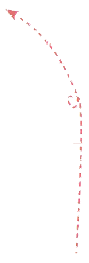
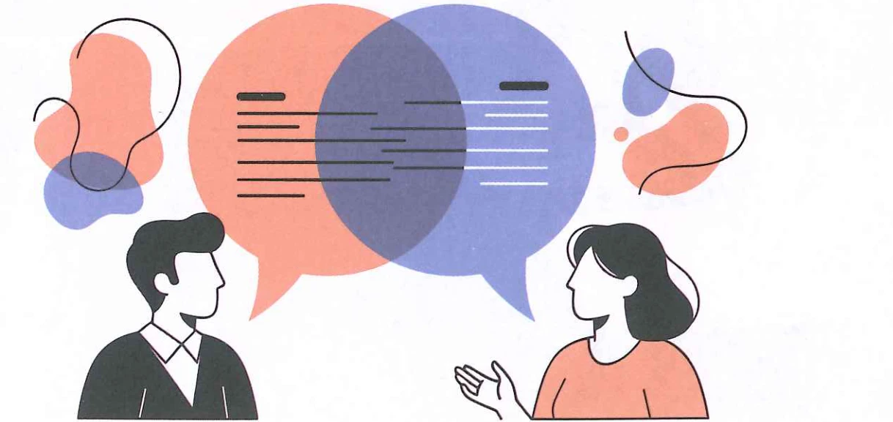

 Wáng Yīfēi王一飞
Wáng Yīfēi王一飞请问，你叫什么
名字？
名字？
Chén Tiānzhōng陈天中
我叫陈天中。
Wang Yifei: May I ask, what's your name?
Chen Tianzhong: My name is Chen Tianzhong.
Ван Ифэй: Могу я спросить, как вас зовут?
Чэнь Тяньчжун: Меня зовут Чэнь Тяньчжун.
生词New WordsНовые слова
①请问qǐngwènv.гл.excuse meразрешите спросить
②你nǐpron.мест.(singular) you(единственное число) ты; вы
③叫jiàov.гл.be called asзваться; называться
④什么shénmepron.мест.whatчто; какой
⑤名字míngzin.сущ.nameимя
⑥我wǒpron.мест.I; meя; мне
分角色朗读对话。Role-play the dialogue.Разыграйте диалог по ролям.
两人一组，用自己的名字互相问答。Work in pairs. Ask and answer questions using your own names.Работайте в парах. Задавайте вопросы и отвечайте на них, используя свои собственные имена.
